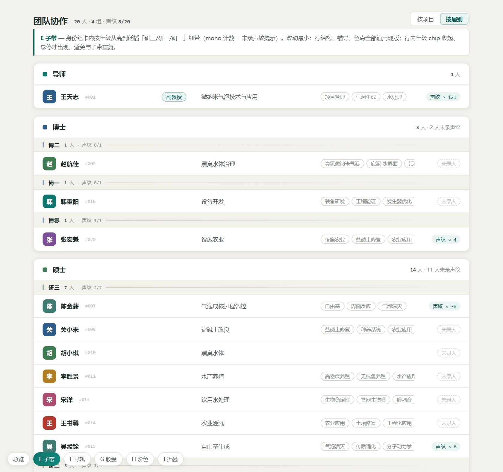
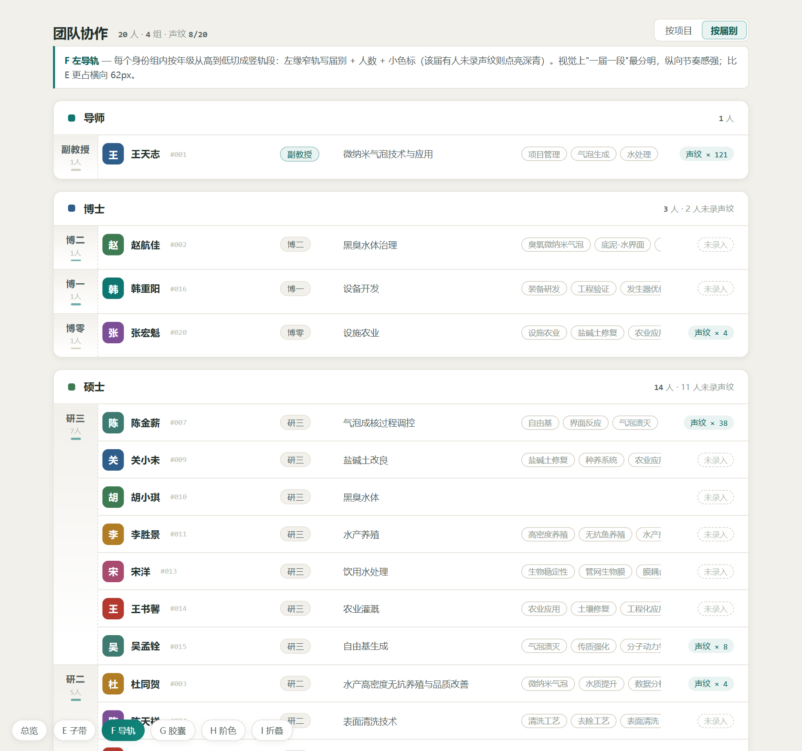
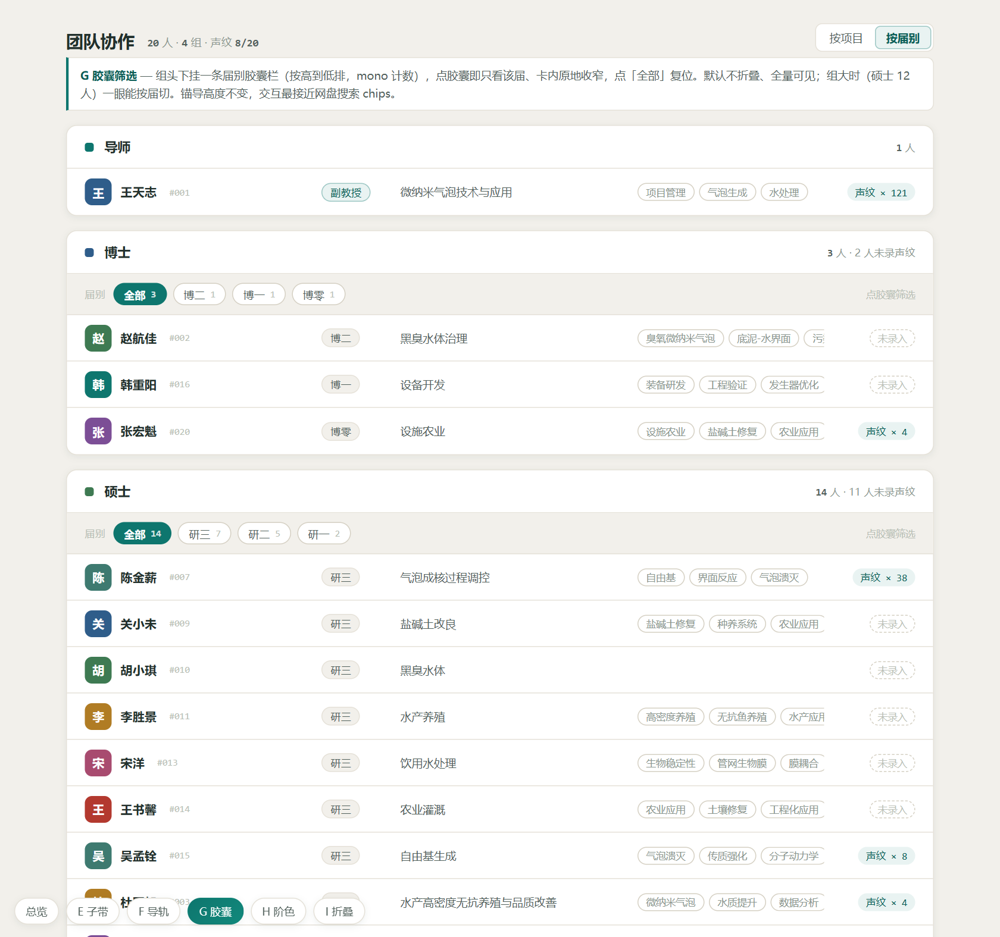
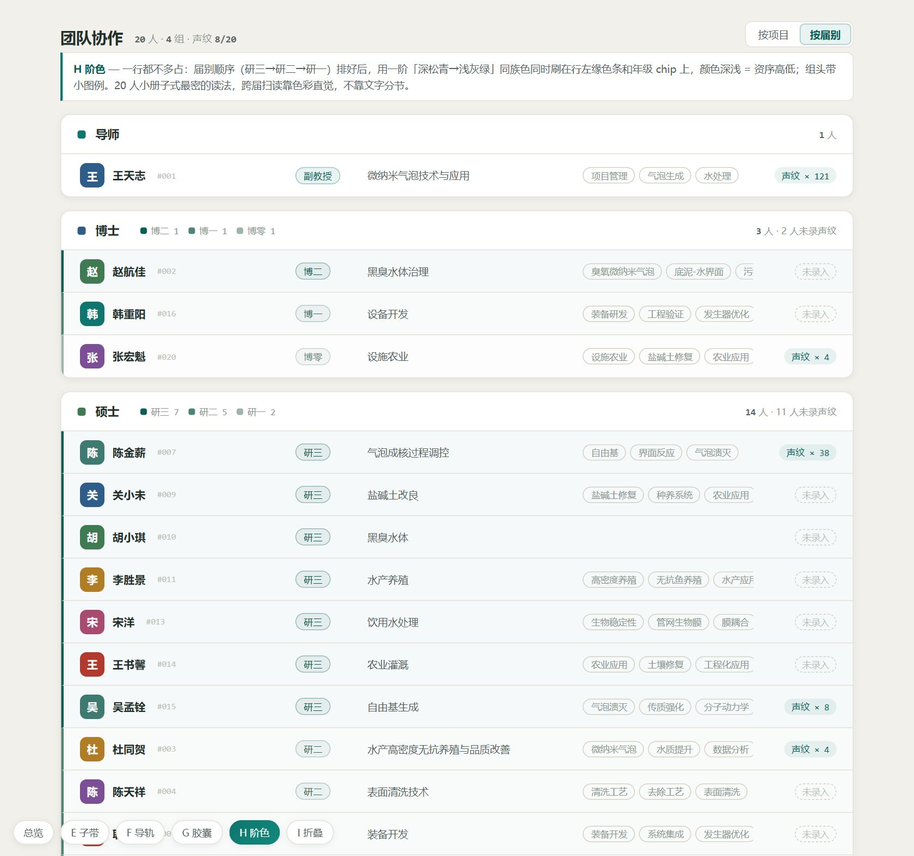
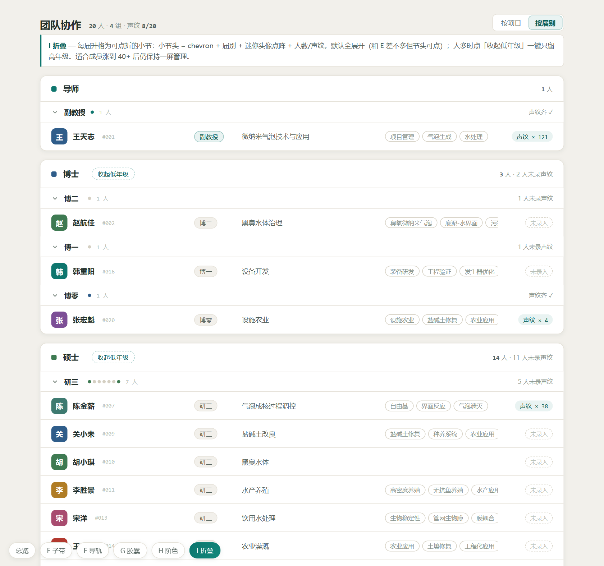

需求：硕士（及博士、本科生）大类内部按年级从高到低排序并加小分区（研三 / 研二 / 研一 各一小节）。五版都基于现版「名录卷宗」（网盘 B 设计语言）只动按届别视图；数据取 2026-09-15 生产快照（20 人）。组内届序统一研三→研二→研一、届内按入组序号。E/F 零交互改动纯排版；G/H/I 含稿内可点交互，请在浏览器里点一点再选。

组卡内插一条暖底子带：届别名 + mono 人数 + 该届声纹进度，右端渐隐发丝线。行内年级 chip 收起、悬停浮现，避免与子带重复。

每届挂一条左缘竖轨（届别+人数+缺声纹点亮标），行缩进在轨右侧。一届一段，像古籍版框。

组头下挂届别胶囊栏（全部/研三/研二/研一+计数），点胶囊原地只看该届。默认全量可见，是「筛」不是「折」。

不加分节头：研三→研一用一阶深松青→浅灰绿同族色刷行左缘与年级 chip，颜色深浅=资序；组头带图例。

每届升格为可点折小节：chevron+届别+迷你头像点阵+声纹小计；组头「收起低年级」一键聚焦高年级。